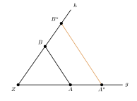
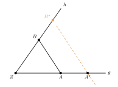
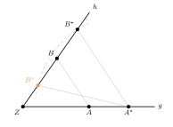
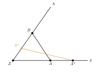

Aufgabe 5.2
Begründen Sie dass
- sich der 1. Strahlensatz umkehren lässt;
- die Umkehrung des 2. Strahlensatzes falsch ist.
- Formulieren Sie zunächst präzise die Umkehrungen beider Sätze
- Für den Beweis der Umkehrung: Nutzen Sie einen Widerspruchsbeweis
- Für das Gegenbeispiel: Konstruieren Sie eine Figur mit gleichen Verhältnissen aber ohne Parallelität
- Skizzieren Sie die Situationen sorgfältig
Bezeichnungen wie im Satz: $g$ und $h$ schneiden sich in $Z$; $A$, $A^\star$ liegen auf $g$, $B$, $B^\star$ auf $h$, jeweils auf derselben Halbgeraden ab $Z$.
(a) Was zu zeigen ist

Die Umkehrung des 1. Strahlensatzes lautet: Aus $\frac{\overline{ZA}}{\overline{ZA^\star}}=\frac{\overline{ZB}}{\overline{ZB^\star}}$ folgt $AB\parallel A^\star B^\star$. Bekannt sind nur die Verhältnisse; ob die beiden Querstrecken parallel sind, ist die Frage.
(a) Die Parallele, von der man es weiss

Man zeichnet durch $A^\star$ die Parallele zu $AB$. Sie trifft $h$ in einem Punkt $B^\circ$ auf derselben Halbgeraden wie $B$, und für diese Figur gilt der 1. Strahlensatz: \[\frac{\overline{ZA}}{\overline{ZA^\star}}=\frac{\overline{ZB}}{\overline{ZB^\circ}}.\] Nach Voraussetzung ist dasselbe Verhältnis gleich $\frac{\overline{ZB}}{\overline{ZB^\star}}$. Also ist $\overline{ZB^\circ}=\overline{ZB^\star}$: zwei Punkte auf derselben Halbgeraden, gleich weit von $Z$ entfernt — es ist derselbe Punkt. Die Parallele durch $A^\star$ geht also durch $B^\star$, das heisst $AB\parallel A^\star B^\star$.
(b) Wo die Umkehrung scheitert

Die Umkehrung des 2. Strahlensatzes würde lauten: Aus $\frac{\overline{ZA}}{\overline{ZA^\star}}=\frac{\overline{AB}}{\overline{A^\star B^\star}}$ folgt $AB\parallel A^\star B^\star$. Um sie zu widerlegen, genügt ein Gegenbeispiel.
Man beginnt mit einer parallelen Lage, in der der Satz gilt, und schlägt um $A^\star$ einen Kreis mit dem Radius $\overline{A^\star B^\star}$. Er trifft $h$ nicht nur in $B^\star$, sondern ein zweites Mal, im Punkt $B^\circ$.
(b) Das Gegenbeispiel

Weil $\overline{A^\star B^\circ}=\overline{A^\star B^\star}$ ist, gilt auch \[\frac{\overline{ZA}}{\overline{ZA^\star}}=\frac{\overline{AB}}{\overline{A^\star B^\circ}}.\] Die Voraussetzung der Umkehrung ist erfüllt, aber $A^\star B^\circ$ ist nicht parallel zu $AB$. Die Umkehrung des 2. Strahlensatzes ist falsch.
Im Video: Etappe 7 · Strahlensätze bei 4:01